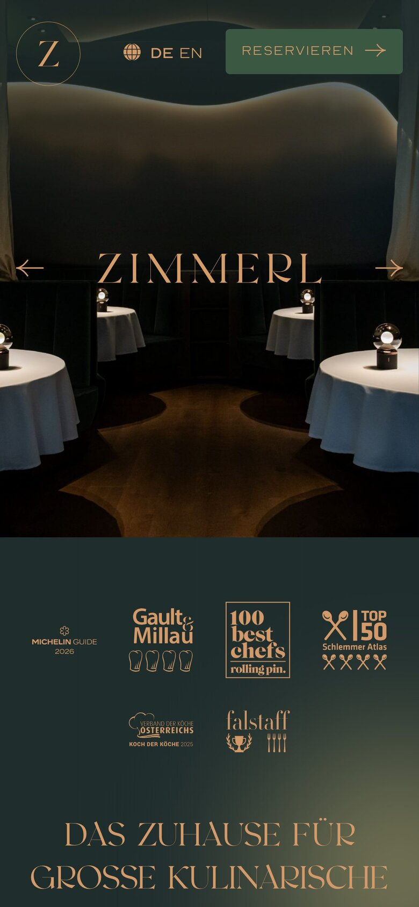
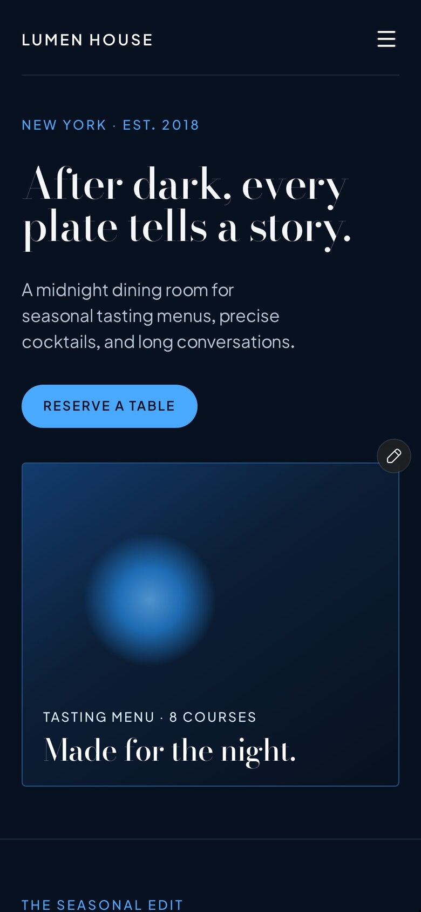
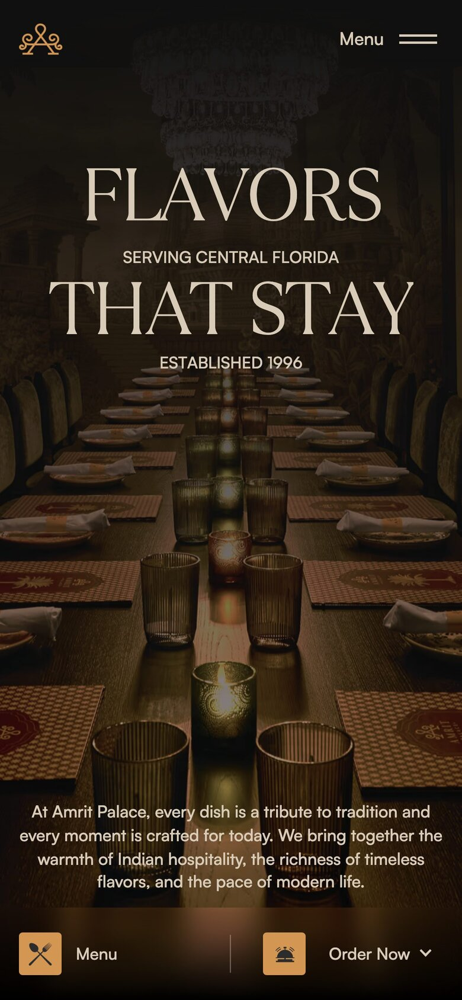
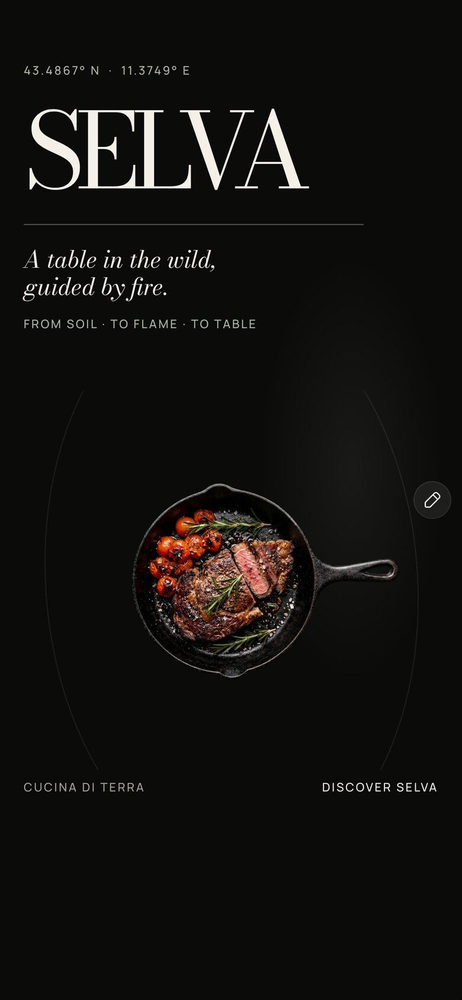
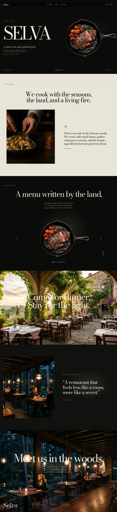
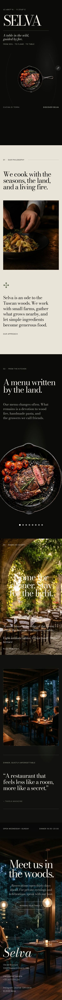

Der Raum ist dunkel. Die Schrift führt durch den Abend.
Worum es geht
Hauptfamilie
Restaurant, Weinbar, Bistro, Fine Dining
Alternative
Salon und Kosmetik gehoben, Barbier premium, Boutique-Unterkunft, Auto premium
Muss
Karte nur aus Daten, Reservieren, Zeiten mit Küche, Anfahrt
Kandidaten
4, Desktop und Handy
Vorab
Worum es geht. Wie bei Journal (Aman Venice), Raster (Colophon), Werkstoff (Hollis Butcher), Plakat (Arcadia) und Klar (Luma Dental) nehmen wir eine komplette Website als Vorlage und bauen ihr System nach, aber besser. Nacht heißt: dunkel, elegant, Abendstimmung. Feine Serife, viel Luft, Fotos abgedunkelt, wenige große Bilder. Muss auch mit trüben Handyfotos aus dem Gastraum gut aussehen.
Wie gesucht. Refero-Styles zu Restaurant, Weinbar, Boutique-Hotel, dunkel und elegant (u. a. Amrit Palace, Liron Moran, Sequel, Ysl, BelArosa, Haley Park). Refero-Screens liefern zu Restaurants nur Plattformen (Tripadvisor, Yelp, Volkshotel). Deshalb rund 30 Seiten live im Browser: echte Restaurants (Zimmerl, Amrit Palace, Ikoyi, Coda, Kol, Nobelhart, Horváth, Bacchanalia, The Mandrake u. a.) und dunkle Framer-Vorlagen (Selva, Lumen House, Velvet Hour, Qitchen, LuxDin, Osteria Nera u. a.).
Wie bewertet. Zusammenhalt vom Einstieg bis zum Fuß, Abdeckung unserer Abschnitte, Handy, Robustheit bei mittelmäßigen Fotos, ob Restaurant, gehobener Salon und Boutique-Unterkunft gleichzeitig hineinpassen, und wie barrierearm es auf Dunkel ist. Je 1 bis 10. Aufnahmen vom 12.10.2026 (Desktop 1440, Handy 390). Cookie-Banner abgelehnt, Framer-Hinweise ausgeblendet, wo möglich.
01Empfehlung
Restaurant Zimmerl
Fine Dining, Waldviertel (AT) · echte Seite, Awwwards-Auszeichnung 2025
Eine Stimmung von oben bis unten: dunkles Petrol (#1f2d2d) mit weichem Moos- und Bernsteinschein, Kupfer (#d39969) als einzige Farbe. Nicht Schwarz-Gold, sondern ein Raum bei Kerzenlicht.
Die Schrift trägt: Wortmarke in einer Display-Serife mit eigener Form, riesige Kupferziffern als Abschnittsöffner (23 Gänge, 5 Tische), dazu Buchserife und breite Versal-Grotesk.
Fotos klein und versetzt gerahmt, eine Kupferlinie mit Punkten führt durch den Raum. Funktioniert auch mit mittleren Bildern, weil Fläche und Ziffer die Arbeit machen.
Deutsche Seite, echte Daten: Auszeichnungen, Küchenchef, Raumkonzept, Team, Tage und Uhrzeit, Reservieren immer oben rechts.
Fließtext 11 bis 12 px, Kupfer-Versalien klein: auf Dunkel zu schwer lesbar. Keine Speisekarte, keine Gästestimmen, keine Fragen. Ergänzen wir im selben Ton.
Ganzes10
Abdeckung6
Handy8
Schwache Fotos8
Branchen-Mix9
Barrierearm5
Summe /6046

Erste 5 SekundenAbgedunkelter Gastraum, darüber der Name in Kupfer, gesperrt und riesig. Oben Signet und Reservieren. Darunter sofort die Auszeichnungen. Wirkt wie Abend, bevor man ein Wort gelesen hat.
Mitternachtsblau (#07111f) statt Schwarz, Bodoni Moda für Überschriften, kleine Grotesk für den Rest. Eigenständig gegenüber allen fünf Systemen.
Die beste Karte ohne Fotos: Gänge nummeriert 01 bis 06 in Serife, rechts drei Geschmackswörter. Zeiten, Anfahrt und „der Tisch“ (Preis, Weinbegleitung, Plätze) als drei klare Kästen.
Handy vorbildlich: alles einspaltig, Karte bleibt als Liste lesbar.
Wenig Wow: schmale Spalte (rund 900 px) auf 1440, Einstieg mit Platzhalter-Kugel statt Bild, Kästen und blaue Pillen-Knöpfe wirken wie Software.
Kein Mensch, keine Stimmen, keine Fragen. Kobaltblau ist eher Bar als Salon oder Hotel.
Ganzes7
Abdeckung7
Handy9
Schwache Fotos9
Branchen-Mix7
Barrierearm6
Summe /6045

Erste 5 SekundenSatz in Bodoni, Ort und Jahr als Kicker, blauer Knopf, darunter Bildkarte „Tasting Menu · 8 Courses“. Klar und ruhig, aber eher Vorlage als Restaurant.
Am vollständigsten: Speisekarte als ockerfarbene Tafel mit Preisen, Getränkekarte als Liste, Catering, Gutschein, Geschichte, Gästestimmen mit Quelle, Fuß mit zwei Standorten und Zeiten je Tag.
Einstieg stark: Versal-Serife über dunklem Tisch bei Kerzenlicht, Google-Schnitt 4,7 als kleine Karte unten rechts.
Nur Einstieg und Fuß sind dunkel, die Mitte ist Sand (#d8cbb5). Das ist warmes Papier mit Speisekarte, also zu nah an Werkstoff.
Lebt von vielen großen, sehr guten Fotos. Mit trüben Handybildern bricht die Mitte weg. Indisch-üppig, für Salon oder Hotel schwer.
Ganzes7
Abdeckung10
Handy7
Schwache Fotos6
Branchen-Mix5
Barrierearm7
Summe /6042

Erste 5 SekundenLange Tafel bei Kerzenlicht, Satz in Versalien, unten feste Leiste Menü und Bestellen. Sehr appetitlich, aber die Nacht hält nur einen Bildschirm.
Der stärkste Wortmarken-Einstieg: Didone-Name riesig auf Schwarz, kursive Unterzeile, Koordinaten als Kicker, ein freigestelltes Gericht daneben.
Schöner Schluss: Schlussbild mit Satz, Knopf und Zeile „geöffnet Mi–So, 18:30–23:00“, Fuß direkt im Bild.
Die Karte ist ein Karussell mit je einem freigestellten Gericht. Ohne Freisteller nicht machbar, ohne Daten leer.
Satz auf hellem Vollbildfoto kaum lesbar, Creme-Abschnitt in der Mitte bricht die Nacht. Fotos sichtbar KI-erzeugt, Schwarz plus Kursive ist nah am Luxus-Klischee.
Ganzes7
Abdeckung7
Handy6
Schwache Fotos4
Branchen-Mix6
Barrierearm6
Summe /6036

Erste 5 SekundenName riesig, kursive Zeile, Pfanne mit Steak im Dunkeln. Sofort edel, aber ohne Reservieren und ohne Ort im ersten Bildschirm.
Ansicht gekürzt, ganze Seite in anker/
Desktop 1440, ganze Seite

Handy 390, zwei Spalten

A
Unsere Abschnitte, Zeile für Zeile
Abschnitt
01 Zimmerl
02 Lumen House
03 Amrit Palace
04 Selva
Einstieg
●Name in Kupfer riesig über abgedunkeltem Gastraum, Signet links, Reservieren rechts, Auszeichnungen direkt darunter
●Satz in Bodoni, Ort und Jahr, Knopf, Bildkarte mit Menü-Hinweis
●Versal-Serife auf Kerzenlicht-Foto, Google 4,7 als Karte
◐Keine Speisekarte. Riesenziffer „23“ (Gänge) mit Text und Knopf Menü
●Nummerierte Gangliste mit Geschmackswörtern, trägt ohne Foto
●Ocker-Tafel mit Preisen, Getränke als Liste
◐Karussell, ein Freisteller je Seite
Über uns / Küche
●Küchenchef s/w, Kupfer-Versalzeile, Text; Kreislauf-Abschnitt mit Foto
◐„The Room“ als Bild-Text-Kasten, kein Mensch
●Geschichte auf großem Raumfoto
●Philosophie auf Creme, Foto und Absatz
Galerie
●Raumkonzept mit Ziffer „5“ (Tische), Fotos versetzt, Kupferlinie mit Punkten; Teamband in Schwarz-Weiß
●Sechs kleine Atmosphärenbilder im Raster
◐Viele Fotos verteilt, kein eigener Teil
●Vollbild Terrasse mit Satz
Stimmen / Presse
◐Auszeichnungsreihe (Michelin, Gault&Millau, Falstaff u. a.), keine Gäste
○Fehlt
●Google-Schnitt und Kartenreihe mit Quelle
◐Ein Pressezitat
Erlebnis / Ablauf
◐„Als Gast im Geschehen“: Satz plus Teamband, kein Ablauf
◐Raumabsatz mit Zeiten-Zeile
●Catering in drei Bildern, Gutschein
○Fehlt
Gut zu wissen
○Nur im Fließtext (Allergien)
●Drei Kästen: Zeiten, Anfahrt, der Tisch
○Fehlt
○Fehlt
Reservieren / Zeiten / Anfahrt
●Eigene Fläche mit Signet, Adresse, Tage und Uhrzeit in Kupfer-Versalien, Knopf Reservieren. Keine Route, keine Küchenzeit
●Schlussband zentriert, Knopf, Adresse
●Im Fuß: zwei Standorte, Zeiten je Tag, Telefon
●Schlussbild mit Knopf und Öffnungszeile
Fuß
●Wortmarke, Mail, Adresse, Rechtliches. Ruhig, im selben Petrol
●Zwei Spalten
●Viele Spalten, Wortmarke riesig in Ocker
◐Im Schlussbild
●vorhanden und übertragbar ◐teilweise ○fehlt
B
Empfehlung: Restaurant Zimmerl
Zimmerl ist die einzige Seite, die vom ersten bis zum letzten Bildschirm nach demselben Abend aussieht, und das ohne Schwarz-Gold. Ein Gedanke trägt alles: dunkler Raum, ein warmes Licht, große Ziffern statt großer Bilder. Was fehlt, sind Karte, Stimmen, Fragen und Lesbarkeit. Die bauen wir im selben Ton ein.
WKarte · Abende · Haus · AnfahrtReservieren
Gastraum vom Handy, stark abgedunkelt und leicht ins Petrol gezogen. Das Licht kommt von der Schrift.WEINHAUSWeinbar und Küche · Bremen-Viertel
Heute bis 23 Uhr
Küche bis 22 Uhr
34 Plätze
Ostertorsteinweg 1
12Gerichte auf der Karte
Abendkarte
Rote Bete, Ziegenkäse12Haselnuss, Thymianhonig
Kalbsbäckchen26Selleriepüree, Schalotten
Zwetschgen, Sauerrahm9Mandelkrokant
Öffnungszeiten
Mo, Di
Ruhetag
Mi (heute)
Küche bis 22
17–23 Uhr
Do
Küche bis 22
17–23 Uhr
Fr, Sa
Küche bis 23
17–24 Uhr
Anfahrt und Tisch
Ostertorsteinweg 1 28203 Bremen
Tram 2, 3 bis Sielwall
Tisch reservierenRoute
Muster mit Platzhalterwerten. Karte, Ziffer, Küchenzeiten, Plätze und ÖPNV erscheinen nur, wenn die Daten es hergeben. Reservieren führt auf Telefon oder Buchungslink.
Was wir 1:1 übernehmen
Grund dunkles Petrol (#1f2d2d, Flächen #223b3b) mit weichem Moos- und Bernsteinschein, nie flaches Schwarz
Kupfer (#d39969) als einzige Akzentfarbe: Wortmarke, Ziffern, Versal-Kicker, Linien, Knopf-Rahmen
Drei Schriftrollen: Display-Serife mit Charakter nur für Name und Ziffern, Buchserife für Text, breite gesperrte Versal-Grotesk für Kicker und Zeiten
Einstieg: Name riesig und gesperrt über abgedunkeltem Raumfoto, Signet links, Reservieren immer rechts oben
Riesenziffer als Abschnittsöffner, Fotos klein und versetzt gerahmt, Kupferlinie mit Punkten als Leitfaden
Auszeichnungen direkt unter dem Einstieg (nur wenn vorhanden), Team in Schwarz-Weiß als Band
Reservieren als eigene ruhige Fläche mit Signet, Adresse, Tagen; Fuß mit Wortmarke im selben Petrol
Was wir optimieren
Lesbarkeit auf Dunkel: Fließtext mindestens 18 px, Versal-Kicker mindestens 13 px, Text #efe9df, Grau nicht dunkler als #b9c2bc; Kupfer auf Petrol liegt bei rund 5,9:1
Speisekarte nur aus Daten: Abschnitte, Gericht in Serife, Zeile darunter, Preis rechts in Tabellenziffern. Die Ziffer davor zählt echte Daten (Gerichte, Plätze, Jahre, Zimmer); ohne Daten weg
Öffnungszeiten als Tabelle mit „heute“ in Kupfer und eigener Küchenzeit, Ruhetage ausgeschrieben
Anfahrt: Adresse groß, Route, ÖPNV und Parken wenn bekannt. Handy: feste Leiste Anrufen / Reservieren
Ergänzen im selben Ton: Gästestimme als großes Zitat mit Google-Schnitt, „Gut zu wissen“ als Liste (Allergien, Gruppen, Hunde, Gutscheine)
Schwache Fotos: immer abgedunkelt und leicht ins Petrol gezogen, höchstens 3 bis 5, Vollbild nur im Einstieg
Freie Schriften: Valky und Nord sind Kaufschriften, Judson ist frei. Ersatz mit gleicher Haltung im Systemblatt festlegen (z. B. Marcellus, Judson, Jost)
Abgrenzung: kein Papier (Journal, Werkstoff), kein Schwarz-Weiß-Raster (Raster), keine Farbflächen und Sticker (Plakat), keine runden Karten (Klar), kein Schwarz-Gold
C
Drei Betriebe, ein System
01
Restaurant und Weinbar
Einstieg
Name in Kupfer über dem abgedunkelten Gastraum. Zeile: heute offen bis, Küche bis, Plätze, Adresse
Ziffer
12 Gerichte, 40 offene Weine oder 34 Plätze, je nach Daten